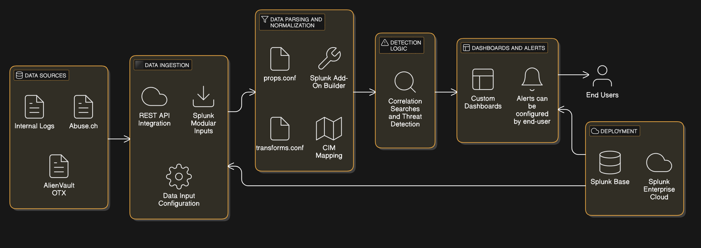

About Me
My name is Donal Wall, I am a Graduate of BSc. Computer Science course at SETU. I am passionate about cybersecurity. With my experience in Splunk, threat intelligence, and security analytics, I have focused on building scalable Splunk Add-On for real-time threat detection.
This project reflects my commitment to enhancing cybersecurity through innovative tools and methodologies. Through this Splunk add-on, I aim to provide individuals and organizations with actionable insights by aggregating diverse threat intelligence feeds.
Introduction
In today’s cyber threat landscape, organizations need scalable, real-time threat detection tools. This project aims to develop a Splunk add-on to aggregate threat feeds, normalize data, and offer actionable insights tailored for various industries like healthcare and finance.
Below is an image detailing the threat intelligence lifecycle
As I hinted above, STI plays a pivotal role in enhancing an organization's ability to defend against cyberattacks.STI systems work in real-time by continuously analysing incoming data and correlating it with existing knowledge on attack patterns and vulnerabilities.
This means that if any organisation identifies unpatched or newly discovered weaknesses in software or systems that could be exploited by attackers, it can enable them to respond faster, the quicker a threat is identified, the faster the response team can act to mitigate the risk
Market Position of Splunk
Splunk is a leader in operational intelligence, with a strong foothold in the market.
Key Features
- Integration with open-source threat feeds (e.g., AlienVault OTX, Abuse.ch).
- Customizable dashboards and alerts for tailored threat analysis.
- Data normalization using Splunk's Common Information Model (CIM).
- Enhanced detection logic correlating internal logs with external threat indicators.
Methodology
The project follows the Waterfall methodology:
- Research: Understanding Splunk add-ons and threat intelligence.
- Planning & Design: Developing a system architecture and data flow design.
- Implementation: Setting up data inputs, parsing and normalizing data, and building dashboards.
- Testing: Validating data ingestion and threat detection logic in controlled environments.
- Deployment: Preparing the add-on for Splunk Enterprise Cloud and potential publication on Splunk Base.
Here is an Architecture Diagram, assiting in visualising how my project works.
Advantages
- Improved visibility into potential threats through diverse data sources.
- User-centric customization for industry-specific needs.
- Seamless integration with existing Splunk setups.
- Cost efficiency by centralizing threat intelligence tools.
- Reduced false positives through advanced correlation searches.
Images of this add-on in use
Below, you will find various images related to this project, showcasing the fields being extracted, data ingestion, the associated scripts, and more: